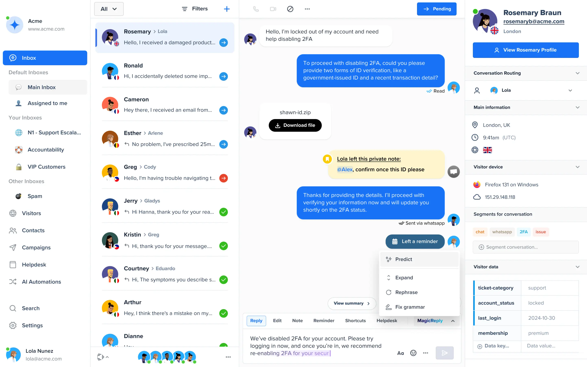
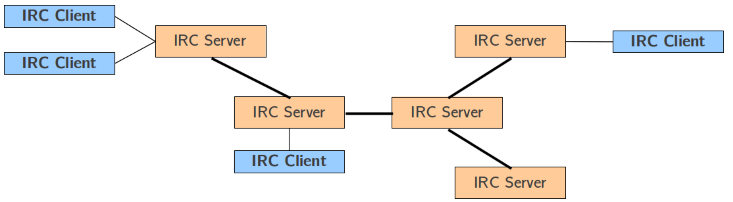

Instant Messaging
Definition:
Instant messaging is a type of real time (immediate) message exchange. It is mostly text-based, but audio and video features are also sometimes included. A special feature is that users can see each other's status and availability; contact lists are also very common. The messages sent are usually short, and sent in a back-and-forth style, mimicking in person exchanges. Because of this, many use Instant Messaging as an alternative to programs like email, since usually the recipient of the message will respond within a shorter timeframe.

Protocols:
- IRC (Internet Relay Chat)
- Allows users to chat in rooms called channels in real time and supports data transfer. It uses the client-server model (clients send requests to servers which then respond) and servers can be connected with a "tree architecture" (each server is connected to others, but not always directly).

- WebRTC (Web Real-Time Communication)
- An open-source project that allows applications to stream audio and/or video. It also allows for applications to communicate directly with each other and is easily integrable.
- XMPP (Extensible Messaging and Presence Protocol)
- Allows for the exchange of extensible data like XML (Extensible Markup Language). It also has no centralised server, and each client is identified by JID (Jabber ID).
Sources: